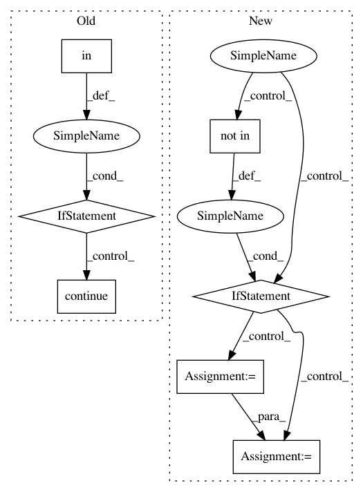

40033b91dc10122d19b85f7612a8e95a1a11e608,grakel/kernels/shortest_path.py,shortest_path,parse_input,#shortest_path#Any#,365
Before Change
continue
label = self._lhash(S, u, v, *L)
if label not in self._enum:
if self._method_calling in [1, 2]:
self._enum[label] = len(self._enum)
else:
continue
idx = self._enum[label]
if idx in sp_counts[i]:
sp_counts[i][idx] += 1
else:
After Change
idx = len(self._enum)
self._enum[label] = idx
elif self._method_calling == 3:
if label not in self._Y_enum:
idx = len(self._enum) + len(self._Y_enum)
self._Y_enum[label] = idx
else:
idx = self._Y_enum[label]
else:
idx = self._enum[label]
if idx in sp_counts[i]:
sp_counts[i][idx] += 1
In pattern: SUPERPATTERN
Frequency: 3
Non-data size: 7
Instances
Project Name: ysig/GraKeL
Commit Name: 40033b91dc10122d19b85f7612a8e95a1a11e608
Time: 2018-01-26
Author: y.siglidis@gmail.com
File Name: grakel/kernels/shortest_path.py
Class Name: shortest_path
Method Name: parse_input
Project Name: onnx/onnx-coreml
Commit Name: 660fbdb4facf97ddfb46b5a4f28a80e7db3aec43
Time: 2018-09-16
Author: aseem.elec@gmail.com
File Name: onnx_coreml/_transformers.py
Class Name: ConstantsToInitializers
Method Name: __call__
Project Name: apple/coremltools
Commit Name: d1e6e624ef891543c5bba32bb0a696d350714693
Time: 2019-08-20
Author: smq@apple.com
File Name: coremltools/models/utils.py
Class Name:
Method Name: _convert_nn_spec_to_half_precision